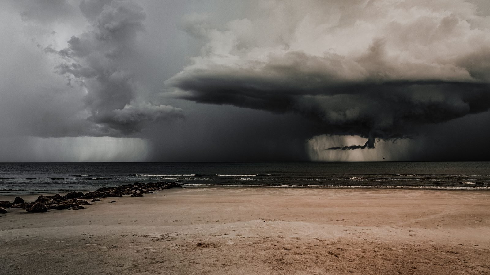

Santa Catarina · Clima
Santa Catarina · ClimaDefesa Civil avisa: mar agitado e risco de ressaca no litoral catarinense até segunda-feira
O aviso de mar agitado que já vinha do mesmo sistema no oceano.
A massa de ar frio segura o tempo firme até esta terça. Da quarta em diante o termômetro sobe até 30 graus, e na sexta chega uma frente fria com risco de temporal, raio e granizo.
Em 30 segundos · Modo de Leitura, formato original Santa Informa
Na madrugada de segunda (24), Bom Jardim da Serra marcou -9,1 °C.
São Joaquim e Urupema ficaram perto de -6 °C, e houve valor negativo no Meio-Oeste e no Vale do Itajaí.
A massa de ar frio mantém o tempo firme até esta terça (25).
De quarta a sexta, as máximas sobem para a faixa de 25 °C a 30 °C.
No litoral, há previsão de chuva fraca e intermitente até quinta (27).
Na sexta (28) chega uma frente fria, com temporais isolados, raios e granizo.
De sábado (29) até 1º de setembro, a chuva fica mais persistente.
A Defesa Civil mantém aviso de agitação marítima, com ondas de 2,0 a 3,0 metros até quinta.
Santa CatarinaPublicada em Redação Santa Informa

Santa Catarina vai trocar de tempo no meio da semana. Na madrugada desta segunda-feira (24), o estado amanheceu com termômetro abaixo de zero. Bom Jardim da Serra registrou -9,1 °C. São Joaquim e Urupema ficaram perto de -6 °C. Pontos do Meio-Oeste e do Vale do Itajaí também tiveram valores negativos ou próximos de zero. A informação é do Governo de Santa Catarina, com base na Defesa Civil.
A mesma massa de ar frio que derrubou a temperatura mantém o tempo firme até esta terça-feira (25). Depois disso ela vai embora e o cenário muda rápido. Entre quarta e sexta, as máximas voltam para a faixa de 25 °C a 30 °C em parte das regiões. É uma diferença de quase quarenta graus entre a mínima da serra na segunda e a máxima prevista para o fim da semana.
Junto com o calor voltam as instabilidades. No litoral, a previsão indica chuva fraca e intermitente até quinta-feira (27), do tipo que molha o dia inteiro sem encher o pluviômetro. A conversa muda na sexta-feira (28), quando se aproxima uma frente fria com possibilidade de temporais isolados, raios e granizo. De sábado (29) até terça-feira, 1º de setembro, a chuva fica mais persistente em parte do estado.
A Defesa Civil de Santa Catarina segue com aviso de agitação marítima. Um ciclone extratropical ao sul da Argentina mantém o mar agitado entre o Litoral Sul e a Grande Florianópolis até quinta-feira (27), com ondulação de 2,0 a 3,0 metros perto do continente e picos maiores em alto-mar. O aviso não cita o Litoral Norte, onde ficam Itapema, Porto Belo e Bombinhas, mas mar mexido no vizinho de baixo costuma chegar aqui com alguma força. A recomendação oficial é evitar atividade marítima enquanto o aviso estiver de pé.
Para quem mora ou trabalha no litoral, três coisas práticas. A primeira é aproveitar quarta e quinta para o serviço que depende de tempo firme, porque a janela é curta. A segunda é olhar a sexta com atenção, já que temporal isolado com raio e granizo derruba galho, alaga esquina de rua sem boca de lobo e atrapalha entrega. A terceira vale para o pescador e para quem aluga passeio de barco. Enquanto o aviso de agitação estiver valendo, mar de dois a três metros não é dia de sair. E vale lembrar que setembro entra chuvoso, o que muda o planejamento de obra ao ar livre e de evento de rua.
O resumo de 30 segundos está no topo e a versão completa é o texto acima. Aqui ficam as três leituras da casa sobre o mesmo assunto.
Clara, a otimista
Quem passou o domingo de casaco vai poder guardar ele na quarta. Trinta graus no fim de agosto é aquele ensaio de primavera que o litoral gosta, com a praia vazia e o mar ainda gelado, do jeito que o morador prefere.
E a chuva que vem depois também tem serventia. Reservatório cheio, jardim verde e poeira de obra assentada. Depois de uma sequência de dias secos e frios, um pouco de água é bem-vinda antes da temporada começar a esquentar de verdade.
Seu Prudêncio, o criterioso
Merece atenção a palavra isolado. Temporal isolado significa que pode cair forte num bairro e nem molhar o outro, e é justamente esse tipo de chuva que pega a cidade desprevenida. Quem tem obra parada com material no pátio precisa cobrir na quinta, não na sexta de manhã.
Vale acompanhar também o mar. O aviso vale do Litoral Sul até a Grande Florianópolis, mas ondulação de três metros não respeita divisa de mapa. Uma sugestão útil para quem opera passeio de barco: confira o aviso todo dia de manhã e deixe a regra combinada com o cliente antes de vender o passeio, para não virar discussão no píer.
Dito isso, avisar com quatro dias de antecedência é exatamente o que se espera de um serviço meteorológico. Ter a frente fria marcada na sexta e o prazo do aviso marítimo até quinta permite que prefeitura, comércio e morador se organizem sem susto, e isso vale mais do que qualquer previsão precisa em cima da hora.
Caco, o sarcástico
Menos nove graus na segunda e trinta na sexta. Santa Catarina não tem estação, tem roleta.
O guarda-roupa do catarinense virou um problema de logística. Casaco na frente, camiseta atrás, guarda-chuva no meio e tudo isso na mesma semana.
E o melhor detalhe: a chuva persistente começa no sábado. Justo o dia que todo mundo separou para fazer a churrasqueira funcionar. Coincidência, com certeza.
Fontes: Governo de Santa Catarina, publicação de 24 de agosto de 2026 às 14h14, com as mínimas registradas em Bom Jardim da Serra, São Joaquim e Urupema, a previsão de máximas entre 25 °C e 30 °C de quarta a sexta, a chuva fraca no litoral até quinta, a frente fria de sexta com temporais isolados, raios e granizo, a chuva persistente de sábado até 1º de setembro e o aviso de agitação marítima da Defesa Civil de SC, com ondulação de 2,0 a 3,0 metros até quinta. Sobre o aviso de mar agitado anterior, veja a matéria da ressaca no litoral.
Santa Catarina · ClimaO aviso de mar agitado que já vinha do mesmo sistema no oceano.
 Santa Catarina · Clima
Santa Catarina · ClimaA massa de ar frio que produziu as mínimas negativas desta segunda.
 Santa Catarina · Clima
Santa Catarina · ClimaComo foi a última passagem de frente fria com risco de granizo no estado.